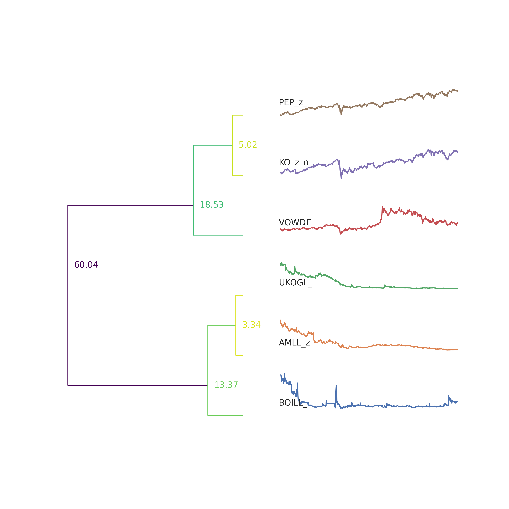

The first chart shows the value of trade between UK and France from 1995 to 2020. This includes all commodities and the unit is in billions.
The second chart looks at the total foreign direct investment in the UK over the last 30 years(1990-2020).
The first chart shows the nominal value of IMF lending to all members from 1984 to 2022.
The second chart builds on the previous chart by dividing this nominal value of lending by global GDP. This chart reduces the danger of misrepresentation of the data that existed in the previous chart.
Comment: The riskiest year is 1984 since the second chart shows that the IMF lent the most in 1984.
The bar chart shows the CO2 emissions from different sectors.
The line chart shows the value corretly and the difference between sectors and the trends of them are shown clearly. That is why I prefer the line chart to the bar chart in this case.
Colab is here
The reason why I choose this website is the table is already the TIDY format in this website.
The dashboard is generated by using APIs from ONS dataset DIOP, which is the output of uk in different parts.
Colab is here
The first map is the base map of North America and the second map shows the population of North America.
According to Sarah Smith, one of the factors driving increasing pay levels at the present is the UK's tight labour market since Covid-19.
I agree with Sarah because these two charts show the rising inactivity rate and increasing average weekly earning in the UK since 2020 (epidemic).
Colab is here
My hypothesis: There is a positive relationship between countries' corruption and their poverty.
Result: This graph shows there is a positive relationship between them.
Colab is here
My hypothesis: For the selected 6 time series: 2 oil companies, 2 car companies and 2 beverage companies, similar companies will be clustered into the same group.
Result: Two beverage companies and two oil companies are in one category but two car companies are not in one category.